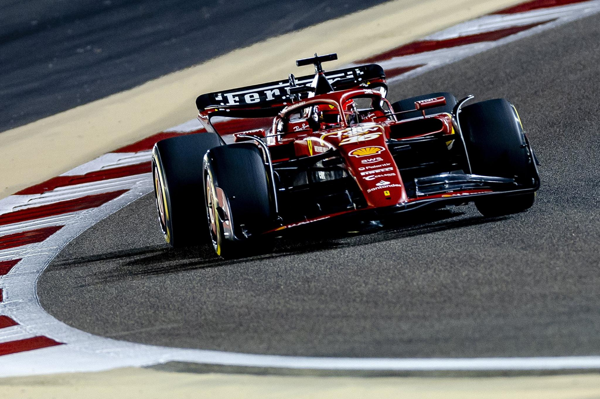
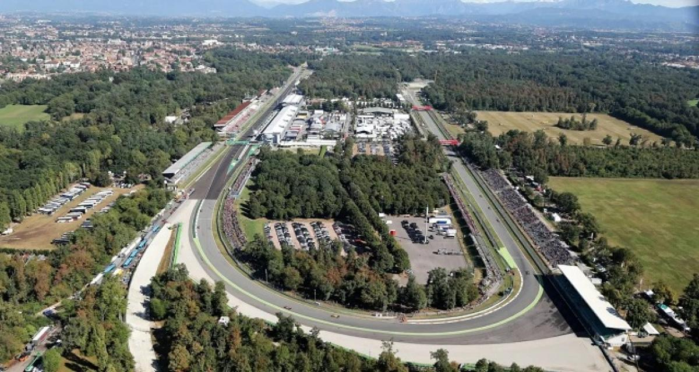

Qu'est-ce que la Formule 1 ?
La Formule 1 est un sport automobile qui se pratique dans une voiture à une seule place, lancée à plus de 300 kilomètres-heure sur un circuit !

Monoplace de Formule 1 sur circuit
Quel est le circuit le + iconique de la Formule ?
Surnommé le "Temple de la vitesse", Monza est le circuit le plus rapide du championnat. Ses longues lignes droites et ses chicanes serrées offrent des courses palpitantes. L'atmosphère y est unique, notamment grâce aux tifosi, supporters passionnés de l'écurie Ferrari.

Circuit de Monza
→ Pour découvrir la saison actuelle, cliquez ici.